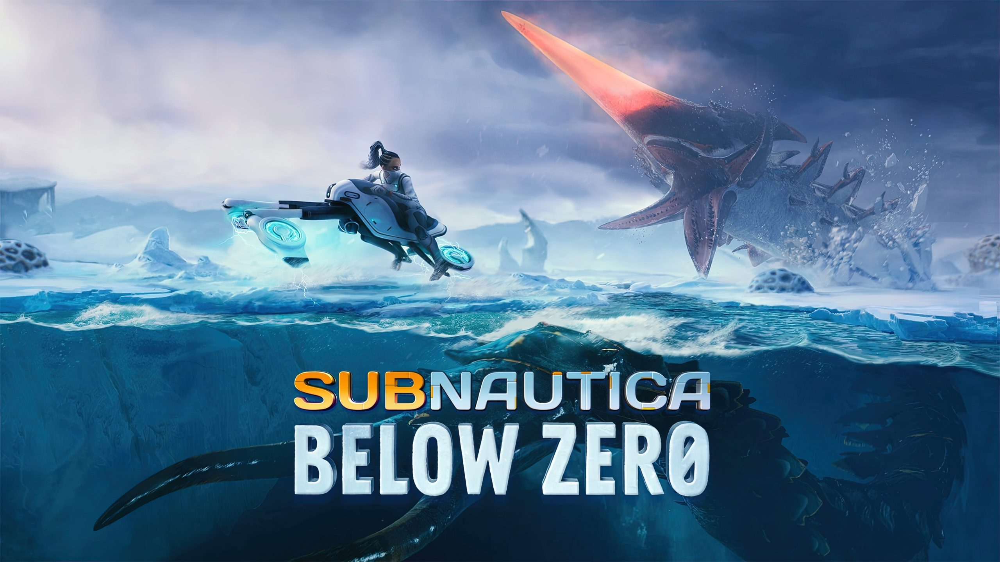
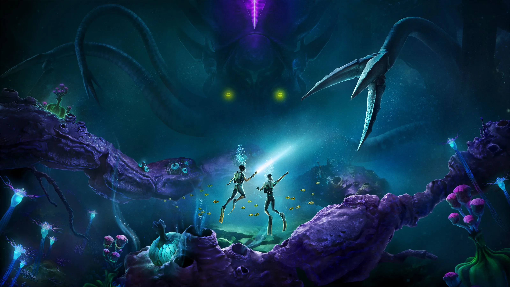
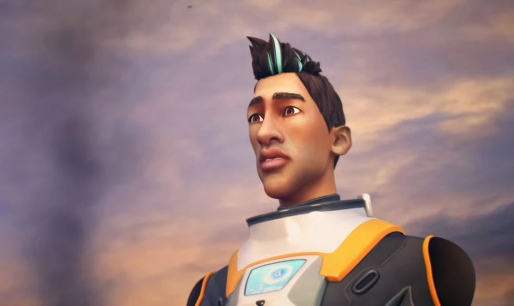
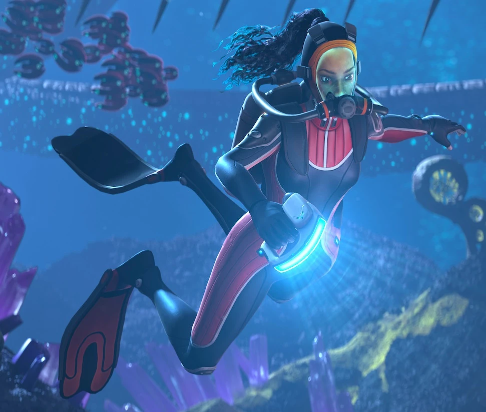

Subnautica
Primeiro jogo da franquia. Explore um planeta aquático apos o acidente da nave Aurora.
Primeiro jogo da franquia. Explore um planeta aquático apos o acidente da nave Aurora.

Segundo jogo da franquia. De volta ao 4546B, mas na parte polar do planeta. Enfrente novos perigos.

Chegando em breve, o terceiro jogo da franquia. Trazendo uma nova experiência, agora cooperativa.

Protagonista do 1° Jogo. Unico sobrevivente do acidente da nave Aurora.

Protagonista do 2° Jogo. Xenologista em busca de sua irmã desaparecida.